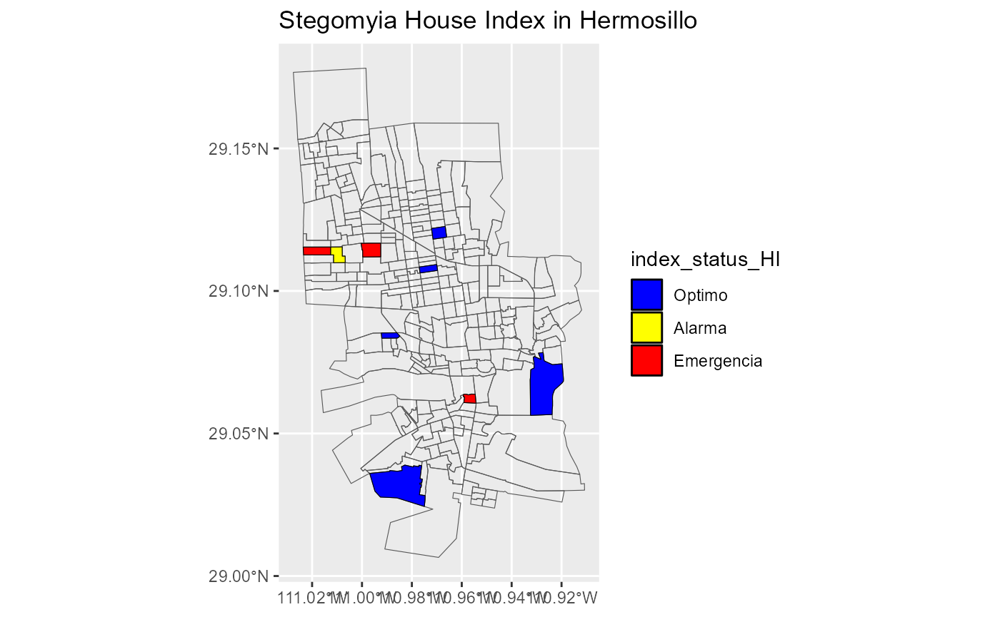
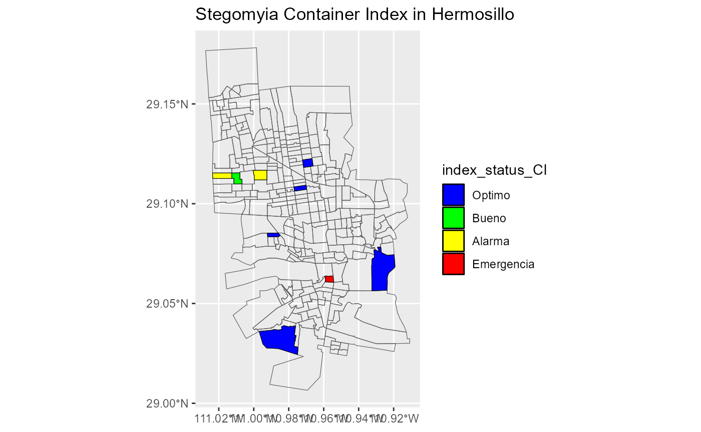
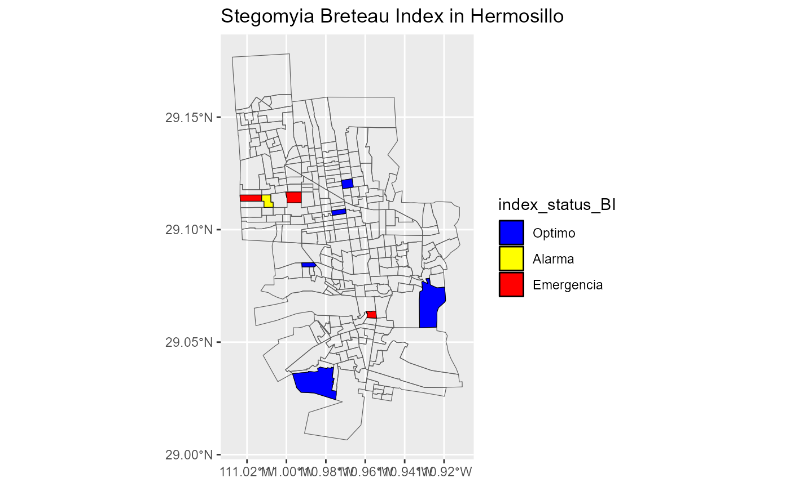

maps.Rmd| title: “Make_to_maps_stegomyia_indices” |
| output: rmarkdown::html_vignette |
| vignette: > |
| % |
| % |
| % |
library(rStegomyia)
#> Loading required package: tidyverse
#> ── Attaching core tidyverse packages ──────────────────────── tidyverse 2.0.0 ──
#> ✔ dplyr 1.1.3 ✔ readr 2.1.4
#> ✔ forcats 1.0.0 ✔ stringr 1.5.0
#> ✔ ggplot2 3.4.3 ✔ tibble 3.2.1
#> ✔ lubridate 1.9.2 ✔ tidyr 1.3.0
#> ✔ purrr 1.0.1
#> ── Conflicts ────────────────────────────────────────── tidyverse_conflicts() ──
#> ✖ dplyr::filter() masks stats::filter()
#> ✖ dplyr::lag() masks stats::lag()
#> ℹ Use the conflicted package (<http://conflicted.r-lib.org/>) to force all conflicts to become errors
#> Loading required package: maptools
#>
#> Loading required package: sp
#>
#> The legacy packages maptools, rgdal, and rgeos, underpinning the sp package,
#> which was just loaded, will retire in October 2023.
#> Please refer to R-spatial evolution reports for details, especially
#> https://r-spatial.org/r/2023/05/15/evolution4.html.
#> It may be desirable to make the sf package available;
#> package maintainers should consider adding sf to Suggests:.
#> The sp package is now running under evolution status 2
#> (status 2 uses the sf package in place of rgdal)
#>
#> Please note that 'maptools' will be retired during October 2023,
#> plan transition at your earliest convenience (see
#> https://r-spatial.org/r/2023/05/15/evolution4.html and earlier blogs
#> for guidance);some functionality will be moved to 'sp'.
#> Checking rgeos availability: TRUE
#>
#> Loading required package: ggmap
#>
#> ℹ Google's Terms of Service: <https://mapsplatform.google.com>
#> ℹ Please cite ggmap if you use it! Use `citation("ggmap")` for details.
#> Loading required package: rgeos
#>
#> rgeos version: 0.6-4, (SVN revision 699)
#> GEOS runtime version: 3.11.2-CAPI-1.17.2
#> Please note that rgeos will be retired during October 2023,
#> plan transition to sf or terra functions using GEOS at your earliest convenience.
#> See https://r-spatial.org/r/2023/05/15/evolution4.html for details.
#> GEOS using OverlayNG
#> Linking to sp version: 2.0-0
#> Polygon checking: TRUE
#>
#>
#>
#> Attaching package: 'rgeos'
#>
#>
#> The following object is masked from 'package:dplyr':
#>
#> symdiff
#>
#>
#> Loading required package: raster
#>
#>
#> Attaching package: 'raster'
#>
#>
#> The following object is masked from 'package:dplyr':
#>
#> select
#>
#>
#> Loading required package: sf
#>
#> Linking to GEOS 3.11.2, GDAL 3.6.2, PROJ 9.2.0; sf_use_s2() is TRUELoad at data of study entomology of file .txt and make dataframe
path_raw_data <- system.file("extdata",
"estudio_entomologico1.txt",
package = "rStegomyia"
)
df_lrd <- load_raw_data(path_raw_data)
#> Rows: 42 Columns: 121
#> ── Column specification ────────────────────────────────────────────────────────
#> Delimiter: "\t"
#> chr (12): Tipo de Estudio, Entidad, Jurisdiccion, Municipio, Localidad, Man...
#> dbl (109): clave, Sector, Altitud (msnm), No. de Habitantes, Semana Epidemio...
#>
#> ℹ Use `spec()` to retrieve the full column specification for this data.
#> ℹ Specify the column types or set `show_col_types = FALSE` to quiet this message.
#> Rows: 42 Columns: 10
#> ── Column specification ────────────────────────────────────────────────────────
#> Delimiter: "\t"
#> chr (4): Tipo de Estudio, Jurisdiccion, Localidad, Fecha de Inicio
#> dbl (6): Sector, Semana Epidemiologica, Casas Revisadas, Casas Positivas, To...
#>
#> ℹ Use `spec()` to retrieve the full column specification for this data.
#> ℹ Specify the column types or set `show_col_types = FALSE` to quiet this message.
head(df_lrd)
#> Tipo_de_Estudio Clave_Jurisdiccion Jurisdiccion Clave_Localidad Localidad
#> 1 Verificacion 2601 Hermosillo 0001 HERMOSILLO
#> 2 Encuesta 2601 Hermosillo 0001 HERMOSILLO
#> 3 Encuesta 2601 Hermosillo 0001 HERMOSILLO
#> 4 Verificacion 2601 Hermosillo 0001 HERMOSILLO
#> 5 Encuesta 2601 Hermosillo 0001 HERMOSILLO
#> 6 Encuesta 2601 Hermosillo 0001 HERMOSILLO
#> Sector Fecha_de_Inicio Semana_Epidemiologica Casas_Revisadas Casas_Positivas
#> 1 569 07/01/2021 1 123 0
#> 2 569 04/01/2021 1 123 24
#> 3 401 07/01/2021 1 69 6
#> 4 401 07/01/2021 1 66 3
#> 5 400 07/01/2021 1 126 9
#> 6 403 07/01/2021 1 153 9
#> Total_de_Recipientes_con_Agua Total_de_Recipientes_Positivos
#> 1 375 0
#> 2 1176 45
#> 3 141 6
#> 4 156 3
#> 5 399 9
#> 6 414 9cleand and format dataframe of study entomology
path_of_example = c(system.file("extdata",
"qr.csv",
package = "rStegomyia"
)
)
df_crd <- clean_raw_data(df_lrd,
path_out = path_of_example
)
#> Warning: The following named parsers don't match the column names:
#> Clave_Municipio, Municipio
head(df_crd)
#> Tipo_de_Estudio Clave_Jurisdiccion Jurisdiccion Clave_Localidad Localidad
#> 1 Verificacion 2601 Hermosillo 0001 HERMOSILLO
#> 2 Encuesta 2601 Hermosillo 0001 HERMOSILLO
#> 3 Encuesta 2601 Hermosillo 0001 HERMOSILLO
#> 4 Verificacion 2601 Hermosillo 0001 HERMOSILLO
#> 5 Encuesta 2601 Hermosillo 0001 HERMOSILLO
#> 6 Encuesta 2601 Hermosillo 0001 HERMOSILLO
#> Sector Fecha_de_Inicio Semana_Epidemiologica Casas_Revisadas Casas_Positivas
#> 1 569 2021-01-07 1 123 0
#> 2 569 2021-01-04 1 123 24
#> 3 401 2021-01-07 1 69 6
#> 4 401 2021-01-07 1 66 3
#> 5 400 2021-01-07 1 126 9
#> 6 403 2021-01-07 1 153 9
#> Total_de_Recipientes_con_Agua Total_de_Recipientes_Positivos
#> 1 375 0
#> 2 1176 45
#> 3 141 6
#> 4 156 3
#> 5 399 9
#> 6 414 9make to data frame of Stegomyia indices
path_of_example2 = c(system.file("extdata",
"statusindicesector.csv",
package = "rStegomyia"
)
)
sectors <-c(df_crd$Sector)
df_sitsgis <- get_stegomyia_indices_by_type_of_study_and_geo_is(df_crd,
var= c(sectors),
path_out = path_of_example2
)
#> Warning in get_stegomyia_indices_by_type_of_study_and_geo_is(df_crd, var =
#> c(sectors), : Casa_Revisada with 0
df_sitsgis
#> Sector HI CI BI index_status_HI index_status_CI
#> 1 390 0.000000 0.000000 0.000000 Optimo Optimo
#> 2 400 9.803922 4.166667 9.803922 Emergencia Alarma
#> 3 401 4.545455 1.923077 4.545455 Alarma Bueno
#> 4 403 7.246377 3.157895 8.695652 Emergencia Alarma
#> 5 444 0.000000 0.000000 0.000000 Optimo Optimo
#> 6 500 0.000000 0.000000 0.000000 Optimo Optimo
#> 7 513 0.000000 0.000000 0.000000 Optimo Optimo
#> 8 540 12.000000 5.357143 12.000000 Emergencia Emergencia
#> 9 569 0.000000 0.000000 0.000000 Optimo Optimo
#> 10 824 0.000000 0.000000 0.000000 Optimo Optimo
#> 11 835 0.000000 0.000000 0.000000 Optimo Optimo
#> 12 848 4.545455 1.923077 4.545455 Alarma Bueno
#> 13 857 0.000000 0.000000 0.000000 Optimo Optimo
#> 14 858 12.000000 5.357143 12.000000 Emergencia Emergencia
#> 15 862 9.803922 4.166667 9.803922 Emergencia Alarma
#> 16 869 7.246377 3.157895 8.695652 Emergencia Alarma
#> 17 921 0.000000 0.000000 0.000000 Optimo Optimo
#> 18 927 0.000000 0.000000 0.000000 Optimo Optimo
#> 19 928 0.000000 0.000000 0.000000 Optimo Optimo
#> 20 1248 0.000000 0.000000 0.000000 Optimo Optimo
#> 21 1305 0.000000 0.000000 0.000000 Optimo Optimo
#> index_status_BI
#> 1 Optimo
#> 2 Emergencia
#> 3 Alarma
#> 4 Emergencia
#> 5 Optimo
#> 6 Optimo
#> 7 Optimo
#> 8 Emergencia
#> 9 Optimo
#> 10 Optimo
#> 11 Optimo
#> 12 Alarma
#> 13 Optimo
#> 14 Emergencia
#> 15 Emergencia
#> 16 Emergencia
#> 17 Optimo
#> 18 Optimo
#> 19 Optimo
#> 20 Optimo
#> 21 Optimomake to maps for Stegomia indices with sector in data frame of Stegomyia indices
list_of_maps <-get_maps_stegomyia_indices(df_sitsgis)
#> Saving 7.29 x 4.51 in image
#> Saving 7.29 x 4.51 in image
#> Saving 7.29 x 4.51 in image
list_of_maps
#> [[1]]
#>
#> [[2]]
#>
#> [[3]]